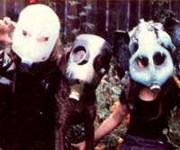

Here's another idea for frightening, do-it-yourself Halloween faces!
Each Halloween, dread Milk Mon sters have been invading my neighborhood ... ever since I discovered plastic jug masks!
Here's how you, too, can construct one of the homemade fright faces. Start by locating a clean gallon container and an Exacto-type artist's knife. Then carefully cut away most of the jug's back third (leave the milkholder's bottom intact, though, so the container can rest-upside down-on your head). Next, decide where the eye openings should be and carve out those holes.
At this point, you could simply paint your mask and leave it at that, but I like to go further with my deviltry and stick weird appendages on my creations. Leftover jug pieces can be easil y welded onto the basic mask-using a propane torch-if you carefully heat each addition's to-be-fastened edge, as well as the complementary area of the mask, until the translucent plastic of those two sections becomes clear.
You can then quickly jam the heat ed surfaces together, and the joined segments will (once they've cooled) form a strong bond. (I've often used this technique to turn extra jug handles into devilish or bestial horns, and scrap pieces into ears.) In addition, the gas-burning device will convert smooth surfaces of your mask into ghastly, uneven shapes. Turn on some imagination, and you'll soon come up with design ideas of your own.
After the construction work is done, you're ready to paint your creations (spray enamel works best for this job). Use wildly bright colors, let the wet pigments run into each other, glue on some metallic sparkle . . . or try any other notions you can dream up.
One thing's for sure: Once you've finished the "gallon ghoulie", Halloween in your neighborhood will never be the same again!
|
 |
|
|